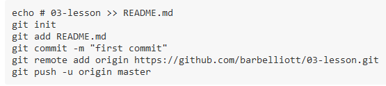

Web Quick Guide
This is good stuff I can refer back to.
Git
Make a new repo
- Open GitBash
- Navigate to the directory you want as a local repo
- Type: git init
- Type this to make sure there has been a change (you should see red text): git status
- Type: git add .
- Type: git commit -m "Initialize repo”
- Go to GitHub
- Make a new repo there with the exact same name as your local directory.
- Copy the URL for the repo:

- Go back to GitBash and type: git remote add origin url
- Type: git push origin master
- Enter your GitHub creds.
- To back to GitHub and refresh the page to make sure all your files are in the repo.
- To make a gh-pages live site:
- In gitbash, in your master, type: git checkout -b gh-pages
- Type: git push origin gh-pages
- Enter your GitHub creds.
- Go to GitHub to make sure the gh-pages is there and complete.
Update a repo
After you make changes on your local files you need to push them to GitHub
- Open GitBash
- Navigate to your local directory
- Type this to make sure there has been a change (you should see red text): git status
- Type: git add .
- Type: git commit -m "Initialize repo”
- Go to GitHub
- Type: git push origin master
- Enter your GitHub creds.
- To back to GitHub and refresh the page to make sure your changes made it to the repo.